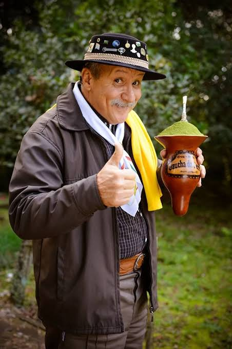

Identidade e Pertencimento
O chimarrão no Paraná vai muito além de uma simples bebida quente; é um símbolo profundo de identidade regional, memória histórica e coesão social. Herança Histórica e Indígena A prática nasceu com os povos Guarani e Kaingang, que já consumiam a Ilex paraguariensis (erva-mate) muito antes da chegada dos colonizadores. No Paraná, essa tradição se consolidou com o ciclo econômico da erva-mate nos séculos XIX e XX, responsável por desenhar a economia, as rotas de transporte (como a ferrovia Paranaguá-Curitiba) e o desenvolvimento de diversas cidades do estado. O chimarrão é o elo direto com essa ancestralidade.

Herança Indígena
Ancestralidade e Herança Indígena A história da bebida nasce com os povos originários Guarani e Kaingang, que habitavam as florestas de araucária. Muito antes da chegada dos colonizadores, eles já dominavam o manejo da Ilex paraguariensis, o processo de secagem das folhas e a invenção da cuia de porongo e da bomba de taquara. Para esses povos, o Ca’ay era uma bebida sagrada, medicinal e comunitária. No Paraná, esse hábito foi assimilado pelos colonizadores e refinado ao longo do tempo, transformando -se na espinha dorsal da economia do estado durante o ciclo da erva-mate nos séculos XIX e XX. Esse período não apenas garantiu a emancipação política do Paraná em 1853, mas também desenhou suas principais rotas, cidades e infraestruturas, como a histórica ferrovia Paranaguá-Curitiba.

Socialização e Hospitalidade
No Paraná, o gesto de oferecer um chimarrão ao visitante vai muito além da cortesia formal: é a expressão máxima de boas-vindas e um verdadeiro código de afeto coletivo. A partir do instante em que a água quente toca a erva e o primeiro mate é servido, estabelece-se um pacto implícito de confiança e abertura. Ao preparar e entregar a cuia, o anfitrião não está apenas oferecendo uma bebida, mas abrindo as portas de sua intimidade e disponibilizando o seu tempo para acolher quem chega. Esse hábito de recepção tem raízes históricas profundas, herdadas do acolhimento das comunidades indígenas e do espírito de entreajuda dos velhos pousos tropeiros, onde a pausa para o mate significava refúgio e calor humano no meio da jornada. Assim, o ato de servir o chimarrão desarma o visitante, quebra a frieza inicial das relações e transforma qualquer ambiente em um espaço seguro de aproximação, consolidando a hospitalidade como uma das características mais marcantes do povo paranaense.

Curiosidades
Curiosidade 1
Escreva outra imformaçao importante
Curiosidade 2
Escreva outra informaçao importante.